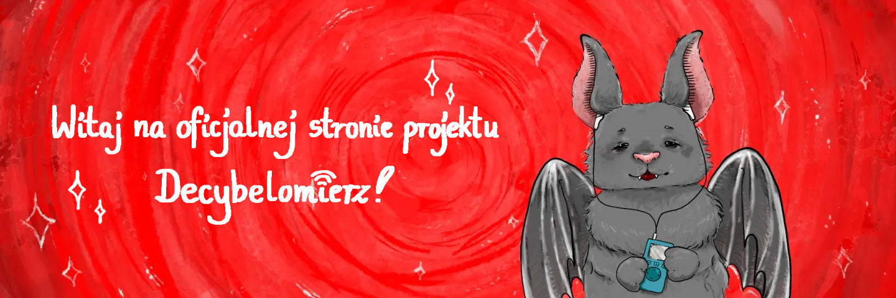

Decybelomierz to projekt realizowany w roku szkolnym 2024/2025 w ramach olimpiady "Zwolnieni z
Teorii". Jego
twórcami są uczniowie I Liceum Ogólnokształcącego im. Książąt Pomorskich w Rumi - Agata
Wojciechowska, Julia
Kołodziejczyk, Agata Gomułka, Piotr Stęchły, Krzysztof Murawski i Jan Dorszyński.
Założyliśmy zrzutkę ma pomagam.pl!
Realizacja każdego projektu społecznego wymaga nie tylko pracowitości i chęci, ale także
budżetu. Pieniądze chcemy przeznaczyć na rozwój projektu - m.in. materiały promocyjne. Każda
złotówka sprawia, że możemy rozwijać projekt i zyskiwać punkty w olimpiadzie:)
Niewykorzystaną część zebranych pieniędzy przekażemy na cele charytatywne związane z tematyką
projektu 🙂
W przypadku chęci wsparcia nas w inny sposób lub podzielenia się pomysłami, prosimy o kontakt
mailowy: decybelomierz@gmail.com.
Dziękujemy za Wasze wsparcie i do usłyszenia!
Ekipa Decybelomierza
© Decybelomierz. Wszelkie prawa zastrzeżone.